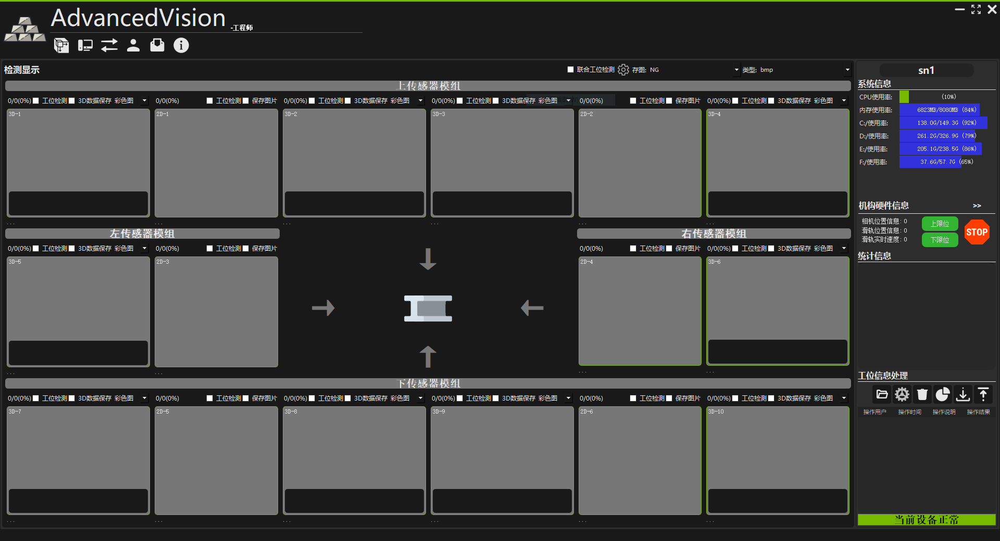
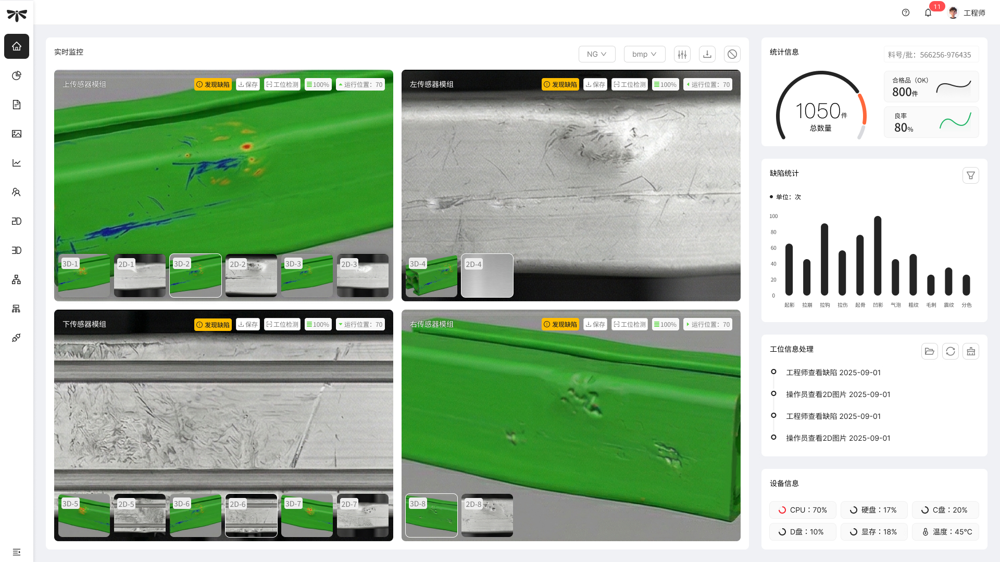
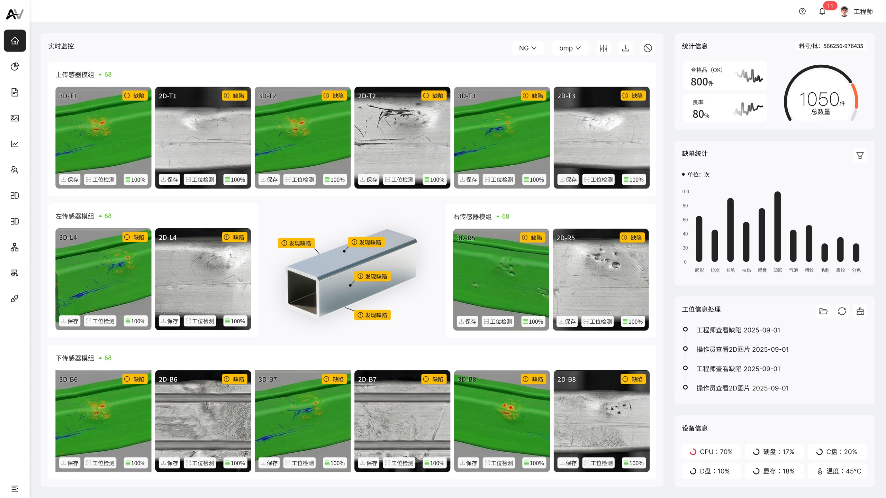
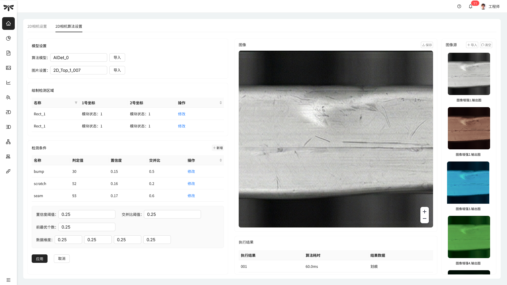

PAGE 01 / 06 封面页 — 第一印象

Project 01 · 2025
AI 视觉
质检系统
质检系统
AI + HMI 全链路设计 · 独立设计顾问 · 从 0 到 1
11 个核心模块从 0 到 1 完整设计交付
4 类角色权限分层方案（工程师 / 操作员 / 维护 / 质检）
多模态工业相机监控布局
PAGE 02 / 06 Situation + Tension — 交代坑位和矛盾
Situation
该 AI 工业视觉企业要做一套工业产线的 AI 视觉质检系统，替代人工目视检测。系统接入多模态工业相机，覆盖多类缺陷的自动识别和分拣，同时服务工厂里四类角色——工程师调算法、操作员盯预警、维护管急停、质检查数据。
我作为独立设计顾问介入时，拿到的是一份 107 页的工程文档和一套黑底工程师工具界面，没有角色区分，没有信息分层，所有功能堆在一个平面上。
我作为独立设计顾问介入时，拿到的是一份 107 页的工程文档和一套黑底工程师工具界面，没有角色区分，没有信息分层，所有功能堆在一个平面上。
| 场景 | 工厂产线旁，工控屏操作 |
| 用户 | 4 类角色（工程师 / 操作员 / 维护 / 质检） |
| 数据 | 多模态传感器，多路相机并发 |
| 硬件 | 工控屏分辨率 / 工业级显示器色差 |
Tension
矛盾一：信息密度 vs 操作容错
多路相机实时画面、统计数据、缺陷柱状图、设备状态、处理日志——监控首页天然过载。每个窗口还需支持独立操作（保存图片、开启检测、缩放）。
矛盾二：设计判断 vs 工厂既有习惯
我的判断和工厂端需求经常对不上。首页放破坏性操作（清除工位信息）——从 UX 角度不合理，但客户和开发都说工厂反复要求。所有需求经开发转述，信息不对称。
Before — 原始工程界面

After — 重构方案

PAGE 03 / 06 Trade-off 1 — 布局方案 A/B 对比
Trade-off · 布局决策
传感器分组 vs 全路平铺：我出了两版，客户选了 A
客户选择 ✓
Plan A — 按物理方位分组
—
按物理方位分组，映射产线实际传感器安装位置
—
操作员看到分组报警，直觉关联到具体检测区域
—
代价：牺牲约 15% 屏幕利用率，总览性弱于 B
我的倾向

Plan B — 全路独立平铺 + 3D 截面
—
所有相机同时可见，信息完整度最高
—
中间放检测对象 3D 截面标注缺陷空间方位
—
未被选择：开发成本更高，客户优先控成本
PAGE 04 / 06 Trade-off 2 & 3 — 权限分层 + 容错机制
Trade-off · 系统架构决策
权限分层：菜单级，不做按钮级
通用版产品，不同客户权限需求不同。按钮级粒度的开发成本和维护成本对初创公司来说 ROI 不够。四类角色各看各的模块，已经比原来「所有人看同一个界面」好太多了。
| 模块 | 工程师 | 操作员 | 维护 | 质检 |
|---|---|---|---|---|
| 实时监控 | ✓ | ✓ | — | — |
| 算法调参 | ✓ | — | — | — |
| 统计信息 | ✓ | 只读 | — | ✓ |
| 缺陷分析 | ✓ | — | — | ✓ |
| 工控急停 | ✓ | — | ✓ | — |
| 相机配置 | ✓ | — | — | — |
| 用户权限 | ✓ | — | — | — |
| 通讯日志 | ✓ | 只读 | ✓ | — |
三级容错：只落地了急停层
AI 不是万能的。产线是连续生产，一旦漏报 / 误报来不及干预，整批产品将报废。我提出了分级容错方案：
轻度
在线调参修正 AI 判定
工程师在系统内微调 2D/3D 算法的置信度和 IoU
已落地
中度
缺陷开关手动接管
操作员手动禁用某路 AI 检测，降级为人工目视
未落地
极端
软硬联动急停
物理按钮触发，软件切断检测流程，伺服电机归位
已落地
中度容错没推动落地，是我妥协让得太快的地方。急停是最后一道防线，但中间缺一层缓冲，系统鲁棒性在实际运行中可能暴露问题。
PAGE 05 / 06 算法调参界面 — 工程师角色深度设计
Deep Dive · 算法参数设置
完整的调参控制权，缺失的安全边界

01
检测条件表
每个缺陷类型独立设置判定值、置信度、IoU。工程师可针对不同产品型号微调参数，实现 AI 检测行为的精细控制。
02
全局参数区
全局置信度阈值 / IoU 阈值 / 前最优个数 / 数据维度作为兜底，局部参数覆盖全局。两层参数结构平衡了通用性和精细度。
坦诚说
03
只有「应用」和「取消」
没有参数范围提示，没有二次确认，没有历史回溯，没有模拟预览。客户没提这个需求，我当时也没主动做。
如果重来，至少会加参数范围校验和修改确认弹层。
如果重来，至少会加参数范围校验和修改确认弹层。
PAGE 06 / 06 Evidence + Reflection — 结果和反思
Evidence · 交付结果
11
核心模块
从 0 到 1 完整设计交付
4
角色权限方案
工程师 / 操作员 / 维护 / 质检
16
路视觉传感器
多模态并发监控
Reflection
如果重来，我会做这两件事
第一，去工厂。
无论如何争取至少去一次，看操作员实际怎么用，而不是全程依赖开发转述需求。很多争论的根源就是信息不对称，我通过开发的描述以及来回沟通，以确认工厂的真实场景。
第二，推动中度容错落地。 急停是最后一道防线，但中间缺一层缓冲。当时没推是考虑了初创公司的现实处境，但现在回头看，这个妥协让得太快了。
产品设计不只是用户体验的事，成本和现实约束也是设计决策的一部分。信息架构的优化可以迭代，但如果第一版因为方案分歧迟迟上不了线，什么都是零。
第二，推动中度容错落地。 急停是最后一道防线，但中间缺一层缓冲。当时没推是考虑了初创公司的现实处境，但现在回头看，这个妥协让得太快了。
产品设计不只是用户体验的事，成本和现实约束也是设计决策的一部分。信息架构的优化可以迭代，但如果第一版因为方案分歧迟迟上不了线，什么都是零。
外部顾问角色的现实：你能影响方案，但控制不了最后一公里。
开发最终在颜色和部分信息排布上按自己的判断做了删减。
开发最终在颜色和部分信息排布上按自己的判断做了删减。
开发团队 + 项目负责人审核确认交付通过。
Delivery Status
落地还原度：开发未完全按设计实现，在颜色和部分信息排布上按其自身判断做了删减。这是外部顾问角色的常态约束。